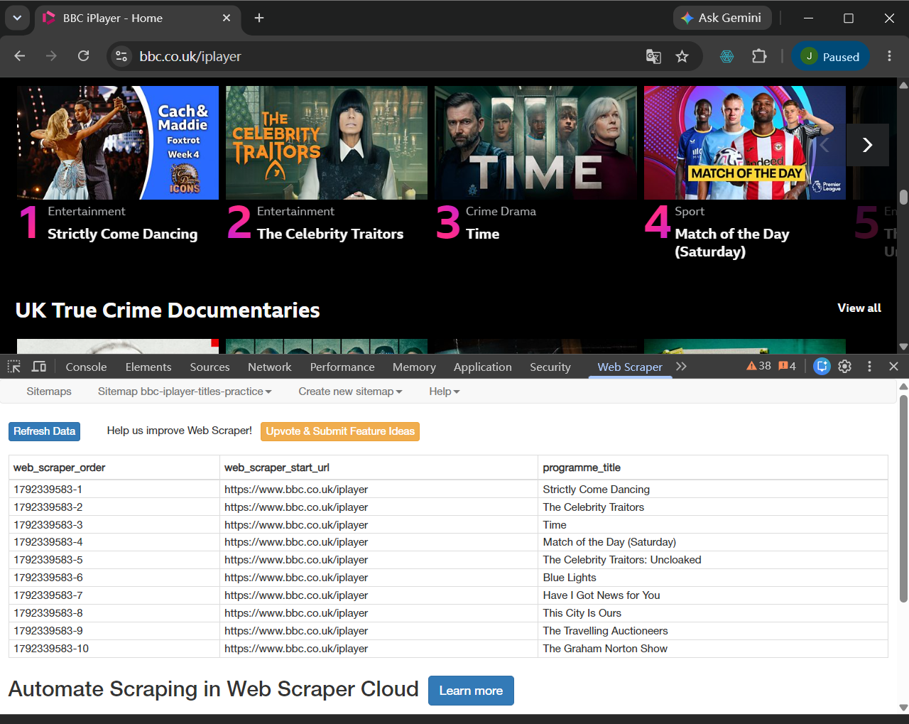

I'll do my best to complete these tasks and continue improving.
I will use this website to share my work and reflections.
This week, I followed the teacher's guide and created a basic website using Visual Studio Code. I created a stylesheet using CSS, uploaded the website files to GitHub, and then used GitHub Pages to publish my portfolio website.
Using the software was not as difficult as I had expected. However, the biggest obstacle for me was English. I found it difficult to follow the teacher's explanations, and I sometimes struggled to understand technical terms. As a result, I need to spend more time studying after class. Although this is challenging, I think I can manage it.
Through this practical activity, I began to understand the basic structure of a website. I realised that the content and structure, visual style, and publishing of a website are separate parts of the process. CampusPress is a convenient content management system with ready-made themes and visual tools. By contrast, using Visual Studio Code to edit HTML and CSS gives me more freedom and control over details. I chose VS Code because I want to improve my web development skills.
This week’s classroom exercise gave me my first opportunity to fully attempt using a web scraper to extract programme titles from the BBC iPlayer homepage. I began by selecting the recurring programme cards, then configured the title selector, and finally ran the scraper, resulting in a data table containing 10 programme titles.
In the process, I realised that web scraping is not simply a matter of copying the text visible on the screen, but rather involves identifying elements within the webpage’s code and instructing the tool where to extract the information from. Initially, the preview results were blank. It was only after I checked and adjusted the selector that I successfully extracted the titles.
This exercise presented a certain degree of difficulty for me, but the main challenge remained at the language level. I intend to continue practising my English after class and will also use the workshop materials uploaded by the tutor for further practice.
